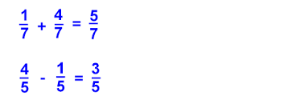
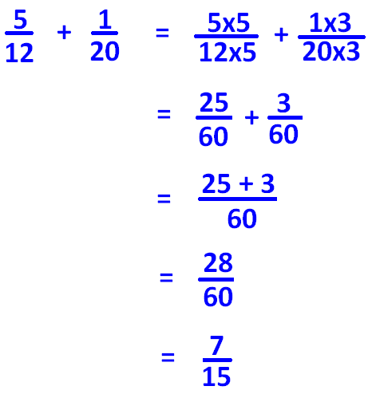
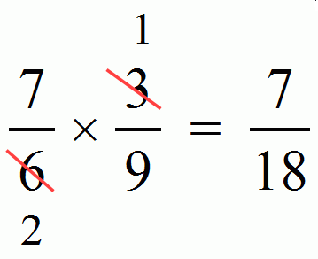
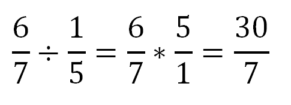
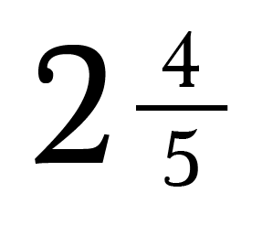
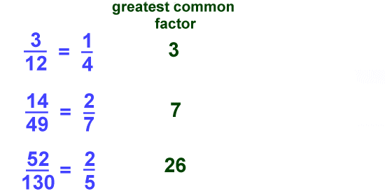

Add and Subtract Fractions -
Ensure that the denominator is the same for all fractions.
If the denominators are the same, add or subtract the numerator normally, and reduce the solution if needed.
Example:
If the denominators are different, multiply the numerator and denominator of one or all of the fractions by a whole number in such a way that the denominators will match. Then continue adding and subtracting normally.
Example:
Multiply and Divide Fractions -
Multiply
When it comes to multiplying the values of the denominator do not affect it. The numerators and denominators are multiplied as usual, and if the solution is simplified if possible.
Example:
Optionally, the fractions can be simplified before multiplying.
Example:
Divide
To divide take the reciprocal of the second fraction. A reciprocal is when the numerator and denominator swap places. Then multiply the first fraction by this new fraction.
Example:
Proper, Improper, and Mixed Fractions
Proper Fractions
Fractions are only proper if the numerator is less than the denominator
a / b and a < b
Example:
3 / 8
Improper Fractions
Fractions are only improper if the numerator is greater than or equal to the denominator
a / b and a ≥ b
Example:
8 / 3
Mixed Fractions
A combination of a whole number and proper fraction
Example:
Greatest Common Factor
The highest number that can be divided into two or more numbers.
Example:
Least Common Denominator
It is the smallest of all the possible common denominators between the two fractions.
Example:
2/3 and 1/4
Multiples of 3:
3, 6, 9, 12, 15, 18...
Multiples of 4:
4, 8, 12, 16, 20, 24...
The least common denominator between 3 and 4 is 12